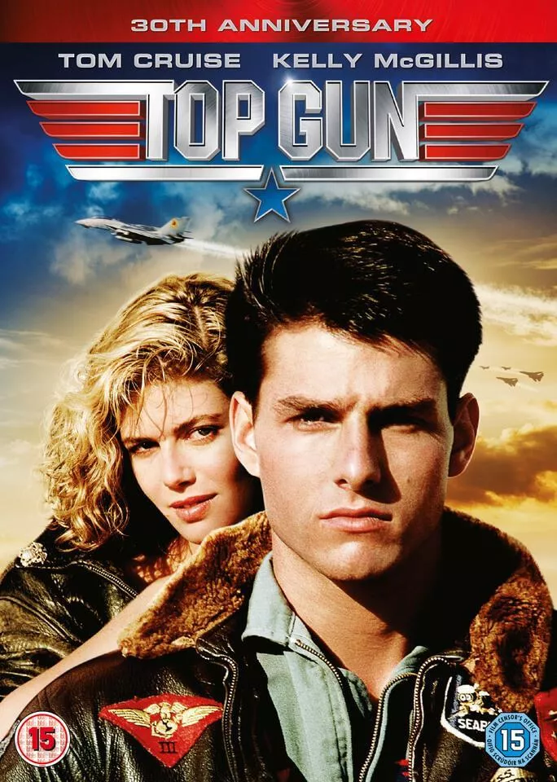

TOP GUN
- Lançamento: 2017
- Duração: 2h 13min
- Direção: Jon Watts
- Elenco: Tom Holland, Michael Keaton, Robert Downey Jr.
- Gênero: Ação, Aventura
Sinopse
Top Gun mostra o perigo e a emoção que aguardam cada um dos pilotos da prestigiosa escola de aviação de caça da Marinha. Tom Cruise é Maverick Mitchell, um ousado jovem piloto que entra na escola de aviação da Marinha americana e pretende tornar-se o melhor entre os melhores, mas para isso precisa enfrentar um competidor à altura, Tom Kazanski (Val Kilmer).